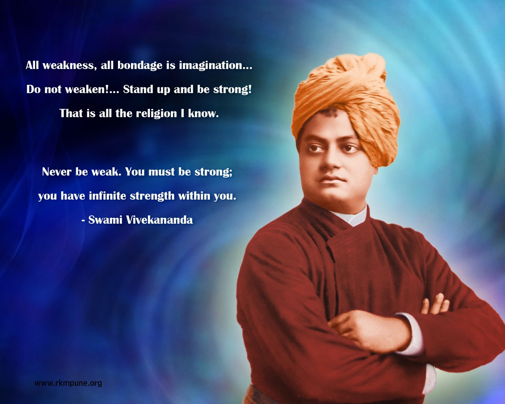
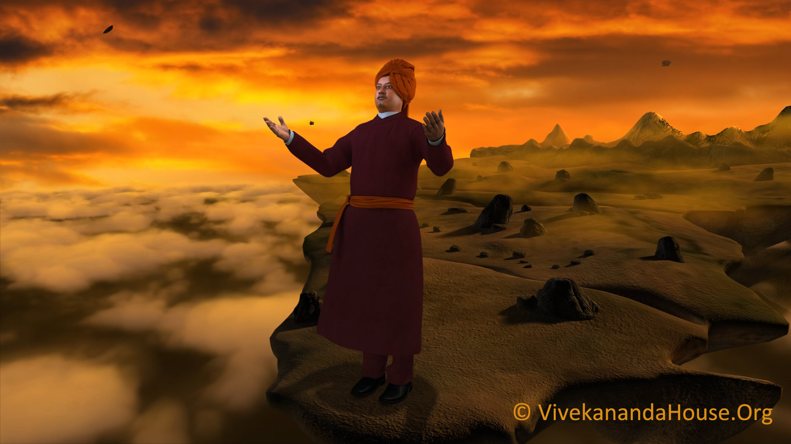

Swami Vivekananda

"You have to grow from the inside out. None can teach you, none can make
you spiritual. There is no other teacher but your own soul. We are what
our thoughts have made us; so take care about what you think. Words are
secondary. Thoughts live; they travel far."
Biography
A spiritual genius of commanding intellect and power, Vivekananda crammed immense labor and achievement into his short life, 1863-1902. Born in the Datta family of Calcutta, the youthful Vivekananda embraced the agnostic philosophies of the Western mind along with the worship of science. At the same time, vehement in his desire to know the truth about God, he questioned people of holy reputation, asking them if they had seen God. He found such a person in Sri Ramakrishna, who became his master, allayed his doubts, gave him God vision, and transformed him into sage and prophet with authority to teach. After Sri Ramakrishna's death, Vivekananda renounced the world and criss-crossed India as a wandering monk. His mounting compassion for India's people drove him to seek their material help from the West. Accepting an opportunity to represent Hinduism at Chicago's Parliament of Religions in 1893, Vivekananda won instant celebrity in America and a ready forum for his spiritual teaching. For three years he spread the Vedanta philosophy and religion in America and England and then returned to India to found the Ramakrishna Math and Mission. Exhorting his nation to spiritual greatness, he wakened India to a new national consciousness. He died July 4, 1902, after a second, much shorter sojourn in the West. His lectures and writings have been gathered into nine volumes.
Personal Life(1863-1902)
Birth and childhood(1863–88)
Vivekananda was born Narendranath Datta (shortened to Narendra or Naren)at his ancestral home at 3 Gourmohan Mukherjee Street in Calcutta,the capital of British India, on 12 January 1863 during the Makar Sankranti festival. He belonged to a traditional Bengali Kayastha family and was one of nine siblings. His father, Vishwanath Datta, was an attorney at the Calcutta High Court. Durgacharan Datta, Narendra's grandfather was a Sanskrit and Persian scholar who left his family and became a monk at age twenty-five. His mother, Bhubaneswari Devi, was a devout housewife. The progressive, rational attitude of Narendra's father and the religious temperament of his mother helped shape his thinking and personality.
Education(1863–88)
In 1871, at the age of eight, Narendranath enrolled at Ishwar Chandra Vidyasagar's Metropolitan Institution, where he went to school until his family moved to Raipur in 1877. In 1879, after his family's return to Calcutta, he was the only student to receive first-division marks in the Presidency College entrance examination. He was an avid reader in a wide range of subjects, including philosophy, religion, history, social science, art and literature.He was also interested in Hindu scriptures, including the Vedas, the Upanishads, the Bhagavad Gita, the Ramayana, the Mahabharata and the Puranas. Narendra was trained in Indian classical music, and regularly participated in physical exercise, sports and organised activities. Narendra studied Western logic, Western philosophy and European history at the General Assembly's Institution (now known as the Scottish Church College). In 1881 he passed the Fine Arts examination, and completed a Bachelor of Arts degree in 1884.
Spiritual apprenticeship - influence of Brahmo Samaj
In 1880 Narendra joined Keshab Chandra Sen's Nava Vidhan, which was established by Sen after meeting Ramakrishna and reconverting from Christianity to Hinduism. Narendra became a member of a Freemasonry lodge "at some point before 1884"and of the Sadharan Brahmo Samaj in his twenties, a breakaway faction of the Brahmo Samaj led by Keshab Chandra Sen and Debendranath Tagore. From 1881 to 1884 he was also active in Sen's Band of Hope, which tried to discourage youths from smoking and drinking
With RamaKrishna
In 1881 Narendra first met Ramakrishna, who became his spiritual focus after his own father had died in 1884. Narendra's first introduction to Ramakrishna occurred in a literature class at General Assembly's Institution when he heard Professor William Hastie lecturing on William Wordsworth's poem, The Excursion. While explaining the word "trance" in the poem, Hastie suggested that his students visit Ramakrishna of Dakshineswar to understand the true meaning of trance. This prompted some of his students (including Narendra) to visit Ramakrishna
Death(1902)
On 4 July 1902 (the day of his death) Vivekananda awoke early, went to the chapel at Belur Math and meditated for three hours. He taught Shukla-Yajur-Veda, Sanskrit grammar and the philosophy of yoga to pupils, later discussing with colleagues a planned Vedic college in the Ramakrishna Math. At 7:00 p.m. Vivekananda went to his room, asking not to be disturbed;he died at 9:10 p.m. while meditating.According to his disciples, Vivekananda attained mahasamādhi; the rupture of a blood vessel in his brain was reported as a possible cause of death.
World Tour

Travels in India (1888–93)
In 1888, Narendra left the monastery as a Parivrâjaka— the Hindu religious life of a wandering monk, "without fixed abode, without ties, independent and strangers wherever they go". His sole possessions were a kamandalu (water pot), staff and his two favourite books: the Bhagavad Gita and The Imitation of Christ. Narendra travelled extensively in India for five years, visiting centres of learning and acquainting himself with diverse religious traditions and social patterns. He developed sympathy for the suffering and poverty of the people, and resolved to uplift the nation.Living primarily on bhiksha (alms), Narendra travelled on foot and by railway (with tickets bought by admirers). During his travels he met, and stayed with Indians from all religions and walks of life: scholars, dewans, rajas, Hindus, Muslims, Christians, paraiyars (low-caste workers) and government officials. Narendra left Bombay for Chicago on 31 May 1893 with the name "Vivekananda", as suggested by Ajit Singh of Khetri, which means "the bliss of discerning wisdom"
First visit to the West (1893–97)
Vivekananda started his journey to the West on 31 May 1893 and visited several cities in Japan (including Nagasaki, Kobe, Yokohama, Osaka, Kyoto and Tokyo), China and Canada en route to the United States,reaching Chicago on 30 July 1893, where the "Parliament of Religions" took place in September 1893. The Congress was an initiative of the Swedenborgian layman, and judge of the Illinois Supreme Court, Charles C. Bonney, to gather all the religions of the world, and show "the substantial unity of many religions in the good deeds of the religious life." It was one of the more than 200 adjunct gatherings and congresses of the Chicago's World's Fair,and was "an avant-garde intellectual manifestation of cultic milieus, East and West," with the Brahmo Samaj and the Theosophical Society being invited as being representative of Hinduism. Vivekananda wanted to join, but was disappointed to learn that no one without credentials from a bona fide organisation would be accepted as a delegate. Vivekananda contacted Professor John Henry Wright of Harvard University, who invited him to speak at Harvard.Vivekananda wrote of the professor, "He urged upon me the necessity of going to the Parliament of Religions, which he thought would give an introduction to the nation".Vivekananda submitted an application, "introducing himself as a monk 'of the oldest order of sannyāsis founded by Sankara,'" supported by the Brahmo Samaj representative Protapchandra Mozoombar, who was also a member of the Parliament's selection committee, "classifying the Swami as a
Swami Vivekananda at the Parliament of the World's Religions (1893)
The Parliament of the World's Religions opened on 11 September 1893 at the Art Institute of Chicago as part of the World's Columbian Exposition.On this day, Vivekananda gave a brief speech representing India and Hinduism. He was initially nervous, bowed to Saraswati (the Hindu goddess of learning) and began his speech with "Sisters and brothers of America!". At these words, Vivekananda received a two-minute standing ovation from the crowd of seven thousand. According to Sailendra Nath Dhar, when silence was restored he began his address, greeting the youngest of the nations on behalf of "the most ancient order of monks in the world, the Vedic order of sannyasins, a religion which has taught the world both tolerance, of and universal acceptance". Vivekananda quoted two illustrative passages from the "Shiva mahima strotam": "As the different streams having their sources in different places all mingle their water in the sea, so, O Lord, the different paths which men take, through different tendencies, various though they appear, crooked or straight, all lead to Thee!" and "Whosoever comes to Me, through whatsoever form, I reach him; all men are struggling through paths that in the end lead to Me." According to Sailendra Nath Dhar, "it was only a short speech, but it voiced the spirit of the Parliament." Parliament President John Henry Barrows said, "India, the Mother of religions was represented by Swami Vivekananda, the Orange-monk who exercised the most wonderful influence over his auditors". Vivekananda attracted widespread attention in the press, which called him the "cyclonic monk from India". The New York Critique wrote, "He is an orator by divine right, and his strong, intelligent face in its picturesque setting of yellow and orange was hardly less interesting than those earnest words, and the rich, rhythmical utterance he gave them".
Lecture tours in the UK and US
"I do not come", said Swamiji on one occasion in America, "to convert you to a new belief. I want you to keep your own belief; I want to make the Methodist a better Methodist; the Presbyterian a better Presbyterian; the Unitarian a better Unitarian. I want to teach you to live the truth, to reveal the light within your own soul." After the Parliament of Religions, he toured many parts of the US as a guest. His popularity opened up new views for expanding on "life and religion to thousands". During a question-answer session at Brooklyn Ethical Society, he remarked, "I have a message to the West as Buddha had a message to the East." Vivekananda spent nearly two years lecturing in the eastern and central United States, primarily in Chicago, Detroit, Boston, and New York. He founded the Vedanta Society of New York in 1894. By spring 1895 his busy, tiring schedule had affected his health. He ended his lecture tours and began giving free, private classes in Vedanta and yoga. Beginning in June 1895, Vivekananda gave private lectures to a dozen of his disciples at Thousand Island Park in New York for two months
Back in India (1897–99)
The ship from Europe arrived in Colombo, British Ceylon (now Sri Lanka) on 15 January 1897 and Vivekananda received a warm welcome. In Colombo he gave his first public speech in the East, India, the Holy Land
Second visit to the West and final years (1899–1902)
Despite declining health, Vivekananda left for the West for a second time in June 1899accompanied by Sister Nivedita and Swami Turiyananda. Following a brief stay in England, he went to the United States. During this visit, Vivekananda established Vedanta Societies in San Francisco and New York and founded a shanti ashrama (peace retreat) in California.
Quotes
Famous Quotes for inspiration
-You have to grow from the inside out. None can teach you, none can make you spiritual. There is no other teacher but your own soul.
-You cannot believe in God until you believe in yourself.
-All the powers in the universe are already ours. It is we who have put our hands before our eyes and cry that it is dark.
-Condemn none: if you can stretch out a helping hand, do so. If you cannot, fold your hands, bless your brothers, and let them go their own way.
-Arise,awake and donot stop until the goal is reached.
-When an idea exclusively occupies the mind, it is transformed into an actual physical or mental state.
-Truth can be stated in a thousand different ways, yet each one can be true.
-External nature is only internal nature writ large.
-We are what our thoughts have made us; so take care about what you think. Words are secondary. Thoughts live; they travel far.
-The world is the great gymnasium where we come to make ourselves strong.